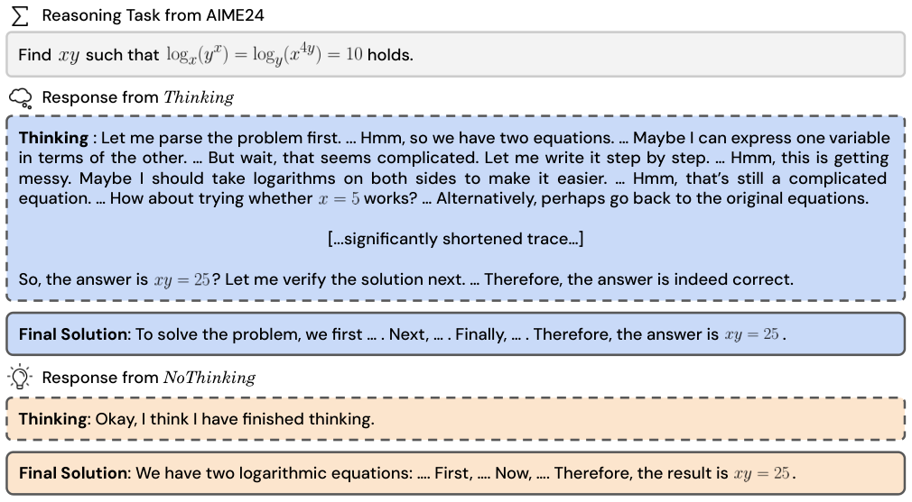

Evaluates NoThinking prompting on Lean 4 theorem-proving benchmarks (MiniF2F, ProofNet), using the Lean compiler as a perfect verifier for best-of-N selection.
Abstract
Recent LLMs have significantly improved reasoning capabilities, primarily by including an explicit, lengthy Thinking process as part of generation. In this paper, we question whether this explicit thinking is necessary. Using the state-of-the-art DeepSeek-R1-Distill-Qwen, we find that bypassing the thinking process via simple prompting, denoted as NoThinking, can be surprisingly effective. When controlling for the number of tokens, NoThinking outperforms Thinking across a diverse set of seven challenging reasoning datasets–including mathematical problem solving, formal theorem proving, and coding–especially in low-budget settings, e.g., 51.3 vs. 28.9 on ACM 23 with 700 tokens. Notably, the performance of NoThinking becomes more competitive with pass@k as k increases. Building on this observation, we demonstrate that a parallel scaling approach that uses NoThinking to generate N outputs independently and aggregates them is highly effective. For aggregation, we use task-specific verifiers when available, or we apply simple best-of-N strategies such as confidence-based selection. Our method outperforms a range of baselines with similar latency using Thinking, and is comparable to Thinking with significantly longer latency (up to 9x). Together, our research encourages a reconsideration of the necessity of lengthy thinking processes, while also establishing a competitive reference for achieving strong reasoning performance in low-budget settings or at low latency using parallel scaling.
Problem
Reasoning LLMs generate long explicit thinking traces before answering, which costs many tokens and adds latency. The question is whether this explicit thinking is necessary for strong reasoning performance.
Approach
NoThinking prefills the assistant response of DeepSeek-R1-Distill-Qwen with a dummy, empty thinking block so the model directly produces the final solution. It is compared with Thinking under budget forcing on seven tasks, including math, coding, and formal theorem proving in Lean 4 (MiniF2F, ProofNet). Parallel scaling generates N NoThinking samples independently and aggregates them, using the Lean compiler as a verifier for formal proofs and confidence-based best-of-N selection otherwise.

Figure 1 : Before producing the final step-wise solution, Thinking generates a long chain of thought in the dedicated thinking box , containing a search process with reflection, backtracking, and self-verification. In contrast, NoThinking directly generates the solution after a prefilled dummy thinking box.
Results
At matched token budgets, NoThinking outperforms Thinking, especially at low budgets (e.g., 51.3 vs 28.9 on AMC 23 with 700 tokens), and its advantage grows with k in pass@k. On MiniF2F and ProofNet, NoThinking pass@2 exceeds full Thinking pass@1 with about 6–7x lower latency and about 4x fewer total tokens.
Task
Thinking Latency
Thinking Acc
NoThinking Latency
NoThinking Acc
k
MiniF2F
7767
34.84
1200 (-6.47x)
36.38
2
ProofNet
10178
5.52
1413 (-7.20x)
6.90
2
Full Thinking (pass@1) vs NoThinking (pass@k) on Lean theorem-proving tasks